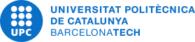

Sobre el proyecto
El proyecto Baja visión en red
Una solución digital para personas usuarias y profesionales que transforma el conocimiento especializado en baja visión en un recurso usable, compartido y socialmente relevante.
El reto
La baja visión es un reto de salud, inclusión y equidad que crece con el envejecimiento de la población. Más allá de la condición clínica, las personas con baja visión tienen dificultades para acceder a información fiable y accesible, a recursos de acompañamiento adaptados y a espacios de relación continuada con profesionales especializados.
Estas dificultades se agravan por la fragmentación de los recursos, la falta de soluciones digitales accesibles y validadas, y la distancia entre el conocimiento académico, la práctica profesional y la sociedad.
Objetivo
Desarrollar, validar y transferir una plataforma digital accesible que transforme el conocimiento especializado en baja visión en un recurso usable, estructurado y socialmente relevante, capaz de mejorar la autonomía de las personas con baja visión y de reforzar las prácticas profesionales en salud visual.
Fases y calendario
El proyecto dura 18 meses y se organiza en tres fases sucesivas, más una fase transversal de gestión y comunicación.
-
Fase 0 · Lanzamiento y gestión del proyecto
Meses 1 a 18
Estructura de gestión, roles, canales de comunicación, plan de difusión y mecanismos de participación de las entidades.
-
Fase 1 · Identificación de necesidades, cocreación y definición funcional
Meses 1 a 6
Análisis de necesidades con personas usuarias de perfiles diversos y profesionales, sesiones de cocreación y definición funcional de la plataforma.
Entregables: documento de análisis de necesidades; documento de definición funcional.
-
Fase 2 · Diseño y desarrollo de la solución digital accesible
Meses 7 a 14
Arquitectura de la información, desarrollo técnico con criterios de accesibilidad, creación de contenidos en lenguaje claro y validaciones iterativas.
Entregables: plataforma funcional y accesible; contenidos estructurados; informe de validación funcional.
-
Fase 3 · Validación, uso y transferencia del conocimiento
Meses 15 a 18
Validación en contexto real con personas con baja visión, ajustes finales, sistematización de los aprendizajes y acciones de transferencia y difusión.
Entregables: plataforma validada; materiales de transferencia y difusión; documento de sistematización de aprendizajes; informe final.
Sesiones de cocreación (noviembre de 2026)
Los días 19 y 20 de noviembre de 2026, en la sede del Col·legi Oficial d'Òptics Optometristes de Catalunya (COOOC), se celebraron dos sesiones de grupo focal con 9 personas de perfiles muy diversos: desde ceguera legal con uso intensivo de lector de pantalla y línea braille hasta baja visión funcional, fotofobia, pérdida de campo central o periférico y complicaciones tras cirugías. Sus conclusiones, junto con las líneas estratégicas del investigador principal, han definido la estructura actual de esta web.
Cuatro principios
- Accesibilidad universal personalizable (WCAG 2.2 AA/AAA): compatibilidad con lectores de pantalla y línea braille, y contraste bidireccional (modo oscuro y modo claro de alto contraste), porque un único modo perjudica a algunos perfiles.
- Tres grandes áreas y un asistente (regla de los dos clics): Pacientes; Familiares e interesados; Profesionales.
- Empatía realista: ni mensajes derrotistas ni positivismo tóxico; testimonios reales, mitos y realidades, y lo que sí se puede hacer.
- Derivación clínica activa: herramientas descargables con casillas y código QR para que los profesionales las entreguen en consulta.
Qué aprendimos
- El vacío tras el diagnóstico: algunas personas tardaron de 2 a 38 años en conocer las ayudas ópticas y la rehabilitación.
- Falta de sensibilidad en algunas consultas y derivaciones tardías desde la atención primaria.
- Incomprensión de la visión mixta y del uso intermitente del bastón.
- Rechazo al positivismo tóxico: se pide un tono cercano, esperanzador y realista.
- Necesidades visuales opuestas: unas personas necesitan fondo oscuro y otras fondo claro, y hay que poder ampliar el texto sin que los iconos se deformen.
Hoja de ruta de la web
- Arquitectura y accesibilidad: estructura semántica, lector integrado y pruebas de la barra de contraste en modo claro y oscuro.
- Contenidos y herramientas: contenidos de las tres áreas, asistente de recursos y generador de PDF y QR para la consulta.
- Validación participativa: prueba con las 9 personas participantes (compatibilidad con tecnologías de apoyo y legibilidad) antes de la apertura pública. Participa.
Cómo trabajamos
-
Cocreación
Las personas con baja visión, los profesionales y las entidades participan desde el principio en la definición de necesidades, contenidos y funcionalidades.
-
Validación iterativa
Cada etapa se prueba con personas usuarias para detectar barreras y corregirlas pronto.
-
El catalán, lengua fuente
Las sesiones, los documentos y los contenidos se crean originalmente en catalán, con lenguaje claro y lectura fácil, y con la revisión del Servicio de Lenguas y Terminología de la UPC.
-
Perspectiva de género e inclusión
Participantes diversos en género, edad, grado de visión y competencia digital, y atención a las desigualdades socioeconómicas y digitales.
-
Sostenibilidad
Arquitectura digital ligera, estándares abiertos, prioridad a las funciones esenciales y menos materiales impresos.
-
Ciencia abierta
Contenidos y materiales de acceso público, datos tratados de forma anónima y agregada, y aprendizajes compartidos para favorecer su reutilización.
Impacto previsto
Personas con baja visión
- Más autonomía en la vida cotidiana.
- Más capacidad para tomar decisiones informadas sobre la salud visual.
- Menos barreras de acceso a información especializada.
- Mejor calidad de vida percibida.
Profesionales
- Acceso a recursos formativos y materiales estructurados.
- Más coordinación entre agentes asistenciales y sociales.
- Más coherencia en el acompañamiento.
Sistema y sociedad
- Un modelo replicable de transferencia del conocimiento en salud visual.
- Contenidos reutilizables y adaptables a otros territorios.
- Más sensibilización y menos estigma.
El impacto se evaluará con indicadores de uso de la plataforma, satisfacción de personas usuarias y profesionales, autonomía percibida (antes y después), acciones de transferencia realizadas y uso de contenidos en catalán.
Objetivos de Desarrollo Sostenible
-
ODS 3
Salud y bienestar
Contribución prioritaria, especialmente a la meta 3.4: bienestar emocional, reducción de la incertidumbre y vínculo con los servicios de referencia.
-
ODS 10
Reducción de las desigualdades
Abordaje de las barreras asociadas a la discapacidad visual, la brecha digital y otros ejes de desigualdad.
-
ODS 4
Educación de calidad
Acceso a conocimiento adaptado y aprendizaje a lo largo de la vida para personas usuarias y profesionales.
Entidades
-

Centre Universitari de la Visió (CUV-UPC)
Entidad coordinadora. Centro sanitario universitario especializado en salud visual, con actividad asistencial, docente y de investigación, y una unidad especializada en baja visión.
-

Associació Discapacitat Visual Catalunya: B1+B2+B3
Entidad colaboradora. Trabaja por la defensa de los derechos, la inclusión social y la calidad de vida de las personas con discapacidad visual. Aporta el conocimiento experiencial de las personas con baja visión.
-

Fundació Punt de Vista
Entidad colaboradora. Especializada en accesibilidad, diseño inclusivo y adaptación de contenidos. Contribuye a la definición de criterios y a la validación de la accesibilidad de la plataforma, y a la difusión de los resultados.
-

Col·legi Oficial d'Òptics Optometristes de Catalunya (COOOC)
Colaboración. Corporación profesional de la óptica y la optometría en Cataluña. Acogió en su sede las sesiones de cocreación de noviembre de 2026.
-

AGAUR
Proyecto presentado a la convocatoria de Ayudas para desarrollar proyectos con impacto del conocimiento en la sociedad (IMPACTE 2025) de la Agència de Gestió d'Ajuts Universitaris i de Recerca.
Trayectoria
El proyecto nace de la trayectoria de aprendizaje-servicio en salud visual de la Facultad de Óptica y Optometría de Terrassa (FOOT) a través del CUV. Desde 2007, el programa Mirades Solidàries ha atendido la salud visual de más de 40.000 personas de toda Cataluña, más de 30.000 de ellas en situación de vulnerabilidad, en colaboración con cerca de 70 entes locales y entidades del tercer sector social.
El CUV también ha coordinado el proyecto «Aprenentatge i servei en gestió de la miopia», financiado en la convocatoria IMPACTE 2023 de la AGAUR.